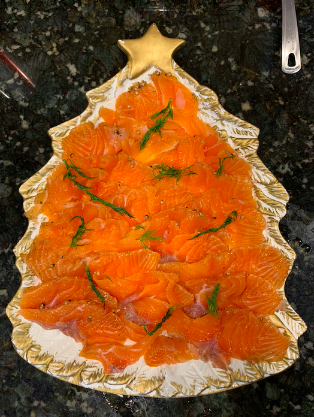

Gravlax

A cured fish with deep roots in Swedish preservation techniques, simply prepared with attainable ingredients.
My mother creatively serves the dish at Christmas time, always accompanied by her secret mustard sauce.
Ingredients
- 2.25 lbs salmon fillet, skin on, patted dry
- 4 tbsp salt
- 4 tbsp sugar
- 20 white peppercorns, coarsely crushed
- 1 bunch dill
Steps
- Remove the pin bones from a clean and evenly thick piece of fish fillet. Rub it all over with a mixture of salt, sugar and aromatics. I like to store the fish and
the curing mix in a plastic bag, which makes it easy to keep the whole surface of the fish in contact with the cure, ensuring an even result. When the fish is
thoroughly coated, place it in its bag on a tray and set a few plates on top to weight it down a little (or use something else flat and suitably heavy). Transfer
it to the refrigerator to cure for the required length of time.
- Cure the salmon for about 24 hours before washing off the cure mix. To stop the cure, take the fish out of the bag and either rinse it
quickly under cold running water or scrape the cure and seasonings off it. Transfer the fish to a new plastic bag, place it back on the tray
and return it to the refrigerator. This allows the cure to even out within the fish. Leave it for about the same length of time as it was in the curing mix.
- Either cut straight down, at a 90-degree angle relative to the chopping (cutting) board, in slightly thicker slices of 4 to 5 mm
(1/8 to 1/4 inch) or else it is cut at a 45-degree angle into very thin and much larger slices.
Note: Ask Mom for sauce recipe